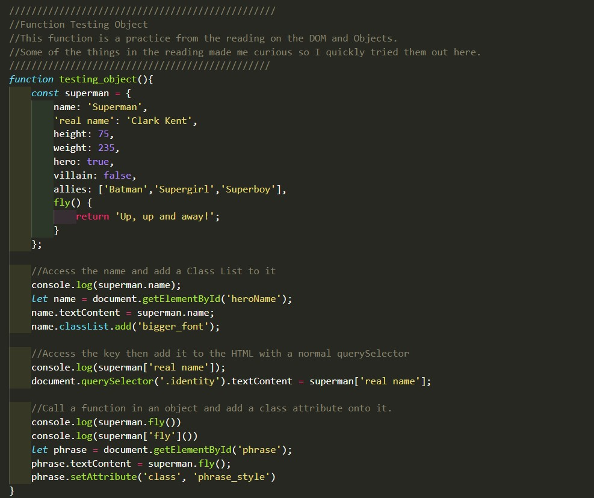
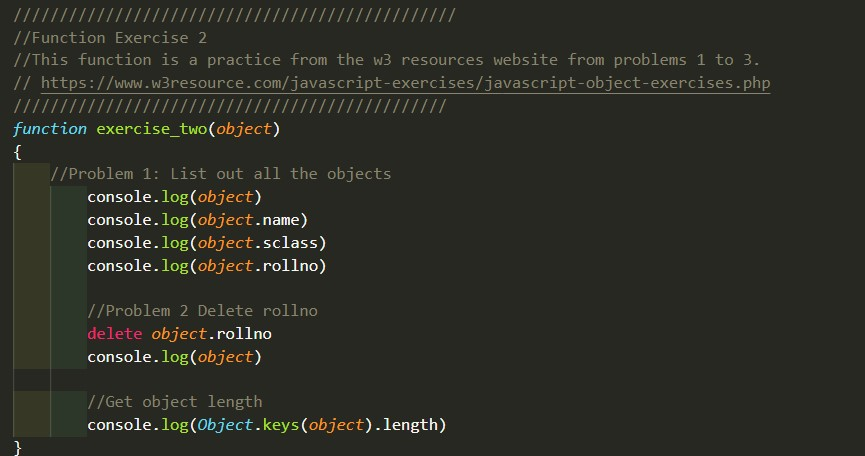
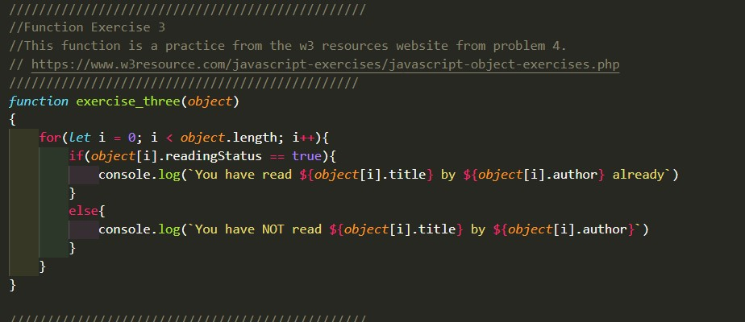
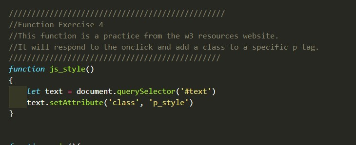

Notes:
- See Reading examples down in the exercise section. I mainly tried out the exercises for myself instead of just writing about them.
Questions:
- In the reading I exerimented with the this pointer (I assume). I went over th earticle and experimented with it a few times. However, is the this kinda like a thing we would use in a Class? In Python we would use the self. thing to refer to a variable within the object. I was wondering if the this. thing acts the same way.
Exercises:
Reading Examples
Click On Me
Double Click On Me
Hover On Me
A One Time Thing...
The screenshot up above is some example code I used to play around with examples that were in th ereadings this week. The random headings and lines above the picture are things I manipulated with the DOM as an experiment. If you would like to play around with the function, go under the folder week3, then under the js folder, then click on the week3 Javascript file.
Exercise 3.1
The screenshot above is some code I did where I practiced three small exercises from w3 schools. If you would like to play around with the function, go under the folder week3, then under the js folder, then click on the week3 Javascript file.
Exercise 3.2
The screenshot down below is the function I made for one of the Javascript Exercises. In the function below, we sort an array using a bubble sort. We are sorting from lowest to highest. If you would like to play around with the function, go under the folder week3, then under the js folder, then click on the week3 Javascript file.
Exercise 3.3
JavaScript Exercises 3- w3resource

The screenshot above is an example of how I manipulated the text through Javascript when a button is clicked. If you would like to play around with the function, go under the folder week3, then under the js folder, then click on the week3 Javascript file.